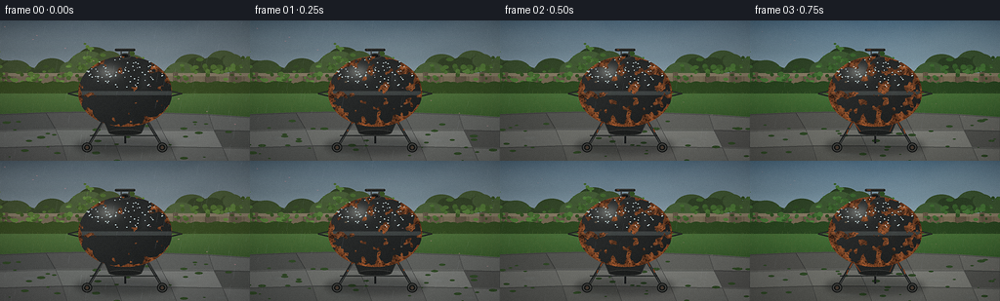
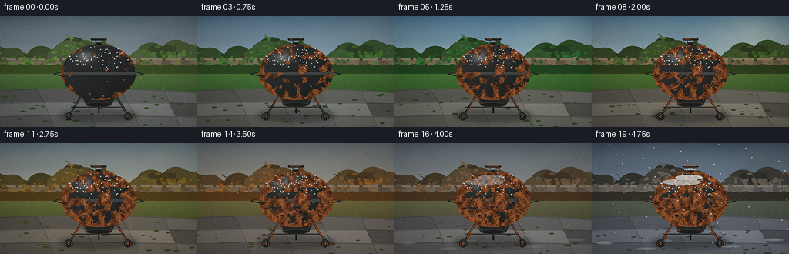
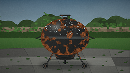

CODING AGENTS AS PIXEL WORLD MODELS
traex/DeepSeek-V4.1-Flash · material_0047
点击播放 · 原生 RGB 像素
此结果可播放，但该运行尚未通过最终提交审核。页面展示不代表评测通过。
逐轮保存的候选
回放视频、检查图与代码变化。
每份候选均可单独播放。实际图片检查记录在下方工具轨迹中。
候选 01播放与检查图
点击播放 · 原生 RGB 像素


展开代码变化
--- 上一保存版本
+++ 本次保存版本
@@ -0,0 +1,581 @@
+from __future__ import annotations
+
+import math
+import subprocess
+from pathlib import Path
+
+import imageio_ffmpeg
+import numpy as np
+from PIL import Image, ImageDraw, ImageFilter, ImageFont
+from scipy import ndimage
+
+import artifact_io
+
+
+W, H = 256, 144
+SS = 4
+CW, CH = W * SS, H * SS
+N, FPS = 20, 4.0
+ROOT = Path(__file__).resolve().parent
+RNG = np.random.default_rng(41729)
+
+
+def px(value: float) -> int:
+ return int(round(value * SS))
+
+
+def box(x0: float, y0: float, x1: float, y1: float) -> tuple[int, int, int, int]:
+ return px(x0), px(y0), px(x1), px(y1)
+
+
+def mix(a, b, f):
+ return tuple(int(round(a[i] + (b[i] - a[i]) * f)) for i in range(3))
+
+
+def season_color(t: float, colors: list[tuple[int, int, int]]) -> tuple[int, int, int]:
+ u = max(0.0, min(2.9999, t * 3.0))
+ i = int(u)
+ return mix(colors[i], colors[i + 1], u - i)
+
+
+def smooth_noise(shape: tuple[int, int], cells: tuple[int, int], seed: int) -> np.ndarray:
+ rng = np.random.default_rng(seed)
+ small = rng.random(cells).astype(np.float32)
+ image = Image.fromarray(np.uint8(np.clip(small, 0, 1) * 255), mode="L")
+ image = image.resize((shape[1], shape[0]), Image.Resampling.BICUBIC)
+ values = np.asarray(image, dtype=np.float32) / 255.0
+ values -= values.min()
+ values /= max(1e-6, values.max())
+ return values
+
+
+def alpha_composite(dst: Image.Image, src: Image.Image, alpha: float) -> Image.Image:
+ if alpha >= 0.999:
+ return Image.alpha_composite(dst.convert("RGBA"), src.convert("RGBA")).convert("RGB")
+ overlay = src.convert("RGBA")
+ overlay.putalpha(overlay.getchannel("A").point(lambda v: int(v * alpha)))
+ return Image.alpha_composite(dst.convert("RGBA"), overlay).convert("RGB")
+
+
+def draw_soft_shadow(draw: ImageDraw.ImageDraw, bounds, fill, blur: float) -> None:
+ x0, y0, x1, y1 = bounds
+ pad = px(8)
+ layer = Image.new("RGBA", (x1 - x0 + pad * 2, y1 - y0 + pad * 2), (0, 0, 0, 0))
+ local = ImageDraw.Draw(layer)
+ local.ellipse((pad, pad, pad + x1 - x0, pad + y1 - y0), fill=fill)
+ layer = layer.filter(ImageFilter.GaussianBlur(px(blur)))
+ draw._image.paste(layer, (x0 - pad, y0 - pad), layer)
+
+
+# Stable scene furniture -----------------------------------------------------
+CLOUD_BLOBS = [
+ (-20, 5, 90, 32, 0.45),
+ (30, 1, 125, 30, 0.36),
+ (105, 8, 205, 39, 0.43),
+ (170, 1, 286, 31, 0.50),
+ (220, 13, 310, 45, 0.31),
+]
+
+LEAF_POINTS = []
+for i in range(280):
+ x = RNG.uniform(-5, 261)
+ center = 58 + 9 * math.sin(x * 0.047) + 5 * math.sin(x * 0.113 + 0.8)
+ y = RNG.normal(center, 10.5)
+ if RNG.random() < 0.52:
+ y = center - abs(y - center) * RNG.uniform(0.15, 0.72)
+ size = RNG.uniform(1.2, 3.7)
+ shade = RNG.uniform(0.68, 1.18)
+ LEAF_POINTS.append((x, y, size, shade, RNG.uniform(0, math.tau)))
+
+GRASS_BLADES = []
+for _ in range(720):
+ x = RNG.uniform(0, W)
+ y = RNG.uniform(75, 103)
+ length = RNG.uniform(1.0, 3.8)
+ lean = RNG.uniform(-0.8, 0.8)
+ tone = RNG.uniform(0.55, 1.2)
+ GRASS_BLADES.append((x, y, length, lean, tone))
+
+PATIO_SLABS = [
+ [(0, 96), (47, 94), (57, 111), (0, 113)],
+ [(47, 94), (101, 93), (111, 111), (57, 111)],
+ [(101, 93), (157, 94), (166, 112), (111, 111)],
+ [(157, 94), (214, 96), (219, 112), (166, 112)],
+ [(214, 96), (256, 99), (256, 113), (219, 112)],
+ [(0, 113), (57, 111), (64, 128), (0, 130)],
+ [(57, 111), (111, 111), (119, 128), (64, 128)],
+ [(111, 111), (166, 112), (175, 129), (119, 128)],
+ [(166, 112), (219, 112), (228, 130), (175, 129)],
+ [(219, 112), (256, 113), (256, 131), (228, 130)],
+ [(0, 130), (64, 128), (69, 144), (0, 144)],
+ [(64, 128), (119, 128), (125, 144), (69, 144)],
+ [(119, 128), (175, 129), (181, 144), (125, 144)],
+ [(175, 129), (228, 130), (234, 144), (181, 144)],
+ [(228, 130), (256, 131), (256, 144), (234, 144)],
+]
+
+
+# Corrosion field ------------------------------------------------------------
+YY, XX = np.mgrid[0:CH, 0:CW].astype(np.float32)
+BX = XX / SS
+BY = YY / SS
+CX, LID_CY, BOWL_CY = 128.0, 73.5, 75.0
+RX, LID_RY, BOWL_RY = 48.0, 37.0, 34.0
+
+LID_MASK = (((BX - CX) / RX) ** 2 + ((BY - LID_CY) / LID_RY) ** 2 <= 1.0) & (BY <= 75.0)
+BOWL_MASK = (((BX - CX) / RX) ** 2 + ((BY - BOWL_CY) / BOWL_RY) ** 2 <= 1.0) & (BY >= 74.0)
+BODY_MASK = LID_MASK | BOWL_MASK
+
+_dist = ndimage.distance_transform_edt(BODY_MASK) / SS
+EDGE_WEIGHT = np.exp(-_dist / 3.2).astype(np.float32)
+LOW_FIELD = smooth_noise((CH, CW), (18, 32), 714)
+MID_FIELD = smooth_noise((CH, CW), (55, 98), 715)
+RUST_FIELD = np.clip(0.53 * LOW_FIELD + 0.23 * MID_FIELD + 0.31 * EDGE_WEIGHT, 0, 1)
+RUST_FIELD = (RUST_FIELD - RUST_FIELD[BODY_MASK].min()) / (
+ RUST_FIELD[BODY_MASK].max() - RUST_FIELD[BODY_MASK].min()
+)
+COLOR_FIELD = smooth_noise((CH, CW), (40, 70), 716)
+PIT_FIELD = smooth_noise((CH, CW), (150, 260), 717)
+
+DROP_POINTS = []
+for _ in range(105):
+ angle = RNG.uniform(0, math.tau)
+ rr = math.sqrt(RNG.random()) * 0.9
+ x = CX + math.cos(angle) * RX * rr
+ y = 50 + math.sin(angle) * 22 * rr
+ if (x - CX) ** 2 / RX**2 + (y - 73.5) ** 2 / 37**2 < 1.0:
+ DROP_POINTS.append((x, y, RNG.uniform(0.35, 1.15), RNG.uniform(0.35, 1.0)))
+
+RUST_HOLES = [(110, 94, 2.8), (141, 101, 2.3), (160, 82, 2.0), (105, 80, 1.7), (151, 91, 1.4)]
+
+
+def render_sky(t: float) -> Image.Image:
+ top = season_color(t, [(87, 105, 116), (76, 130, 167), (110, 119, 118), (70, 86, 103)])
+ bottom = season_color(t, [(169, 180, 178), (207, 222, 212), (202, 174, 138), (157, 172, 182)])
+ y = np.linspace(0, 1, CH, dtype=np.float32)[:, None]
+ sky = np.zeros((CH, CW, 3), dtype=np.float32)
+ for c in range(3):
+ sky[:, :, c] = top[c] + (bottom[c] - top[c]) * (y**0.72)
+
+ # Summer light enters from the upper right; winter keeps only a cool sheen.
+ summer = max(0.0, 1.0 - abs(t - 0.38) / 0.25)
+ winter = max(0.0, (t - 0.72) / 0.28)
+ glow_x, glow_y = 211.0, 21.0
+ glow = np.exp(-(((BX - glow_x) / 47.0) ** 2 + ((BY - glow_y) / 31.0) ** 2))
+ sky += glow[:, :, None] * np.array([48, 43, 24], dtype=np.float32) * summer
+ sky -= glow[:, :, None] * np.array([2, 1, 5], dtype=np.float32) * winter
+ return Image.fromarray(np.uint8(np.clip(sky, 0, 255)), mode="RGB")
+
+
+def draw_clouds(image: Image.Image, t: float) -> Image.Image:
+ layer = Image.new("RGBA", (CW, CH), (0, 0, 0, 0))
+ draw = ImageDraw.Draw(layer)
+ shift = int((t * 8.0) * SS)
+ cloud_alpha = season_color(t, [(116, 122, 126), (85, 91, 94), (105, 102, 98), (108, 117, 126)])
+ for x0, y0, x1, y1, density in CLOUD_BLOBS:
+ draw.ellipse(box(x0, y0, x1, y1), fill=(*cloud_alpha, int(100 * density)))
+ draw.ellipse(box(x0 + 9, y0 - 3, x1 - 7, y1 - 2), fill=(*mix(cloud_alpha, (225, 225, 218), 0.24), int(65 * density)))
+ layer = layer.filter(ImageFilter.GaussianBlur(px(5.0)))
+ if shift:
+ layer = Image.fromarray(np.roll(np.asarray(layer), shift, axis=1), mode="RGBA")
+ return alpha_composite(image, layer, 0.82)
+
+
+def draw_distant_trees(image: Image.Image, t: float) -> None:
+ draw = ImageDraw.Draw(image)
+ far = season_color(t, [(79, 97, 59), (46, 83, 43), (111, 83, 46), (67, 66, 60)])
+ dark = tuple(max(0, int(c * 0.55)) for c in far)
+ for i in range(58):
+ x = (i * 37 + 11) % 275 - 10
+ y = 45 + 7 * math.sin(i * 1.7) + (i % 5) * 2.4
+ r = 7 + (i * 13) % 12
+ color = mix(dark, far, 0.35 + 0.65 * ((i * 17) % 10) / 9)
+ draw.ellipse(box(x - r, y - r * 0.65, x + r, y + r * 0.8), fill=color)
+ # Bare structure remains legible in the cold, leafless season.
+ winter = max(0.0, (t - 0.72) / 0.28)
+ if winter > 0:
+ branch = tuple(int(c + (65 - c) * winter) for c in dark)
+ for x0, x1 in [(20, 44), (211, 190), (236, 218)]:
+ draw.line((px(x0), px(75), px(x1), px(43)), fill=branch, width=px(1.2))
+ draw.line((px(x1), px(51), px(x1 - 12), px(40)), fill=branch, width=px(0.8))
+
+
+def draw_fence(image: Image.Image, t: float) -> None:
+ draw = ImageDraw.Draw(image)
+ wood = season_color(t, [(113, 102, 81), (120, 105, 77), (111, 91, 68), (102, 100, 95)])
+ dark = tuple(int(c * 0.55) for c in wood)
+ light = mix(wood, (190, 180, 153), 0.28)
+ draw.rectangle(box(0, 55, 256, 90), fill=wood)
+ for x in range(2, 256, 13):
+ tone = mix(wood, light if (x // 13) % 2 else dark, 0.16 + ((x * 7) % 11) / 40)
+ draw.rectangle(box(x, 56, x + 11, 88), fill=tone)
+ draw.line((px(x + 0.8), px(57), px(x + 0.8), px(87)), fill=dark, width=px(0.35))
+ for k in range(2):
+ gy = 62 + ((x * 11 + k * 17) % 22)
+ draw.line((px(x + 2), px(gy), px(x + 9), px(gy + 1.4)), fill=mix(tone, dark, 0.35), width=px(0.22))
+ draw.rectangle(box(0, 54, 256, 57), fill=light)
+ draw.rectangle(box(0, 87, 256, 91), fill=dark)
+ for x in [3, 61, 119, 177, 235]:
+ draw.rectangle(box(x, 53, x + 5, 92), fill=mix(wood, dark, 0.34))
+ draw.line((px(x + 1), px(54), px(x + 1), px(91)), fill=light, width=px(0.35))
+
+
+def draw_hedge(image: Image.Image, t: float) -> None:
+ draw = ImageDraw.Draw(image)
+ foliage = season_color(t, [(88, 119, 55), (43, 101, 47), (151, 91, 36), (81, 75, 63)])
+ winter = max(0.0, (t - 0.73) / 0.27)
+ for x, y, size, shade, angle in LEAF_POINTS:
+ base = tuple(int(c * shade) for c in foliage)
+ if winter > 0:
+ base = mix(base, (113, 103, 91), winter * 0.72)
+ if y < 63 or winter < 0.86:
+ rx = size * (0.85 + 0.2 * math.cos(angle))
+ ry = size * (0.6 + 0.2 * math.sin(angle))
+ draw.ellipse(box(x - rx, y - ry, x + rx, y + ry), fill=base)
+ # A dark lower hedge mass anchors the fence and keeps foliage from floating.
+ lower = tuple(int(c * 0.48) for c in foliage)
+ draw.rectangle(box(0, 69, 256, 83), fill=lower)
+ for i in range(38):
+ x = i * 7 - 2
+ r = 5 + (i * 5) % 7
+ draw.ellipse(box(x - r, 65 - r * 0.25, x + r, 76 + r * 0.45), fill=mix(lower, foliage, 0.32))
+
+
+def draw_lawn_and_patio(image: Image.Image, t: float) -> None:
+ draw = ImageDraw.Draw(image)
+ lawn_top = season_color(t, [(81, 113, 60), (61, 113, 49), (111, 104, 54), (83, 90, 75)])
+ lawn_bottom = season_color(t, [(57, 87, 43), (45, 91, 38), (88, 78, 42), (69, 78, 69)])
+ for y in range(px(75), px(102)):
+ f = (y / SS - 75) / 27
+ draw.line((0, y, CW, y), fill=mix(lawn_top, lawn_bottom, f), width=1)
+ for x, y, length, lean, tone in GRASS_BLADES:
+ color = mix(lawn_bottom, (133, 145, 75), min(1, tone * 0.35))
+ draw.line((px(x), px(y), px(x + lean), px(y - length)), fill=color, width=max(1, px(0.18)))
+
+ # Stone patio with slight perspective, wet joints, and old moss.
+ stone = season_color(t, [(105, 107, 103), (111, 111, 101), (111, 103, 90), (105, 110, 116)])
+ for i, poly in enumerate(PATIO_SLABS):
+ tone = 0.76 + ((i * 19) % 17) / 38
+ color = tuple(min(255, int(c * tone)) for c in stone)
+ draw.polygon([(px(x), px(y)) for x, y in poly], fill=color)
+ shifted = [(x, y + 0.7) for x, y in poly]
+ draw.line([(px(x), px(y)) for x, y in shifted], fill=mix(color, (38, 40, 39), 0.52), width=px(0.7))
+ for i in range(34):
+ x = RNG.uniform(0, W)
+ y = RNG.uniform(101, 144)
+ r = RNG.uniform(1.0, 4.3)
+ color = season_color(t, [(54, 78, 42), (48, 76, 40), (82, 71, 39), (67, 73, 66)])
+ draw.ellipse(box(x - r, y - r * 0.35, x + r, y + r * 0.3), fill=color)
+ for x, y, width, alpha in [
+ (22, 119, 18, 35),
+ (84, 136, 27, 28),
+ (181, 121, 22, 32),
+ (218, 139, 17, 26),
+ ]:
+ wet = Image.new("RGBA", (CW, CH), (0, 0, 0, 0))
+ wd = ImageDraw.Draw(wet)
+ wd.ellipse(box(x, y, x + width, y + 3.2), fill=(184, 205, 207, alpha))
+ wet = wet.filter(ImageFilter.GaussianBlur(px(1.4)))
+ image.paste(wet, (0, 0), wet)
+
+
+def draw_legs(image: Image.Image, rust_p: float) -> None:
+ draw = ImageDraw.Draw(image)
+ metal = (36, 39, 39)
+ edge = (83, 84, 78)
+ rust = (136, 67, 33)
+ # Rear brace first.
+ draw.line((px(128), px(105), px(128), px(126)), fill=(26, 28, 28), width=px(2.0))
+ draw.line((px(105), px(104), px(90), px(129)), fill=metal, width=px(2.8))
+ draw.line((px(151), px(104), px(166), px(129)), fill=metal, width=px(2.8))
+ draw.line((px(105.6), px(104.4), px(90.6), px(128.6)), fill=edge, width=px(0.55))
+ draw.line((px(151.5), px(104.4), px(165.5), px(128.6)), fill=edge, width=px(0.55))
+ draw.line((px(92), px(118), px(161), px(118)), fill=(31, 34, 33), width=px(1.0))
+ # Corrosion begins at leg joints and runs downward.
+ if rust_p > 0.08:
+ for x0, y0, x1, y1 in [(105, 104, 94, 122), (151, 104, 162, 123), (100, 112, 96, 126), (157, 111, 162, 126)]:
+ f = min(1.0, (rust_p - 0.08) / 0.7)
+ xe = x0 + (x1 - x0) * f
+ ye = y0 + (y1 - y0) * f
+ draw.line((px(x0), px(y0), px(xe), px(ye)), fill=rust, width=px(0.9))
+ for x in [89, 166]:
+ draw.ellipse(box(x - 5.2, 125.2, x + 5.2, 135.2), fill=(28, 30, 29))
+ draw.ellipse(box(x - 4.0, 126.4, x + 4.0, 134.0), outline=(82, 83, 78), width=px(0.75))
+ draw.ellipse(box(x - 1.6, 128.8, x + 1.6, 132.1), fill=(76, 62, 50) if rust_p < 0.5 else (131, 67, 35))
+
+
+def draw_ash_catcher(image: Image.Image, rust_p: float) -> None:
+ draw = ImageDraw.Draw(image)
+ draw.polygon([(px(105), px(102)), (px(151), px(102)), (px(145), px(115)), (px(111), px(115))], fill=(35, 37, 36))
+ draw.line((px(105), px(102), px(111), px(115)), fill=(88, 89, 82), width=px(0.7))
+ draw.line((px(151), px(102), px(145), px(115)), fill=(76, 78, 74), width=px(0.6))
+ draw.ellipse(box(111, 112, 145, 118), fill=(29, 31, 30), outline=(67, 68, 63), width=px(0.55))
+ if rust_p > 0.25:
+ draw.line((px(107), px(105), px(113), px(114)), fill=(128, 62, 31), width=px(0.8))
+ draw.line((px(147), px(104), px(143), px(114)), fill=(109, 54, 29), width=px(0.7))
+
+
+def body_base(image: Image.Image, t: float) -> Image.Image:
+ arr = np.asarray(image, dtype=np.float32).copy()
+ u = (BX - CX) / RX
+ v = (BY - 73.5) / 37.0
+ light = np.clip(0.50 - 0.42 * u - 0.36 * v, 0, 1)
+ shade = 0.20 + 0.40 * light
+ spec = np.exp(-(((BX - 110.5) / 11.5) ** 2 + ((BY - 53.0) / 7.5) ** 2))
+ spec2 = np.exp(-(((BX - 148.0) / 4.0) ** 2 + ((BY - 61.0) / 12.0) ** 2)) * 0.22
+ summer_warm = max(0.0, 1.0 - abs(t - 0.38) / 0.25)
+ base = np.array([24.0 + 1.5 * summer_warm, 26.0 + summer_warm, 26.0], dtype=np.float32)
+ for c in range(3):
+ arr[:, :, c] = np.where(
+ BODY_MASK,
+ np.clip(base[c] + shade * (33.0 if c < 2 else 31.0) + spec * (63.0 if c < 2 else 59.0) + spec2 * 40.0, 0, 255),
+ arr[:, :, c],
+ )
+ # Rim and lower bowl catch cool reflected sky.
+ rim = BODY_MASK & (np.abs(BY - 74.5) < 2.1)
+ for c in range(3):
+ arr[:, :, c] = np.where(rim, np.clip(arr[:, :, c] * 0.6 + (74, 80, 78)[c] * 0.55, 0, 255), arr[:, :, c])
+ return Image.fromarray(np.uint8(np.clip(arr, 0, 255)), mode="RGB")
+
+
+def draw_handles_and_vent(image: Image.Image, rust_p: float) -> None:
+ draw = ImageDraw.Draw(image)
+ # Top vent and handle.
+ draw.ellipse(box(122.5, 33.4, 133.5, 39.2), fill=(30, 33, 33), outline=(78, 79, 74), width=px(0.55))
+ draw.ellipse(box(124.2, 34.5, 131.8, 38.0), fill=(21, 23, 23), outline=(94, 93, 84), width=px(0.35))
+ draw.line((px(124), px(36), px(124), px(31.2)), fill=(56, 58, 56), width=px(1.2))
+ draw.line((px(132), px(36), px(132), px(31.2)), fill=(56, 58, 56), width=px(1.2))
+ draw.rounded_rectangle(box(117.5, 28.8, 138.5, 31.5), radius=px(1.4), fill=(31, 33, 32), outline=(85, 85, 79), width=px(0.35))
+ draw.line((px(119), px(29.5), px(137), px(29.5)), fill=(104, 104, 96), width=px(0.35))
+ # Side wire handles.
+ for side in [-1, 1]:
+ x0 = 128 + side * 47.5
+ x1 = 128 + side * 58.0
+ draw.line((px(x0), px(72.5), px(x1), px(75.0), px(x0), px(77.5)), fill=(31, 34, 33), width=px(1.55), joint="curve")
+ draw.line((px(x0), px(73.1), px(x1 - side * 1.0), px(75.0)), fill=(88, 88, 81), width=px(0.35))
+ if rust_p > 0.15:
+ f = min(1.0, (rust_p - 0.15) / 0.8)
+ draw.line((px(120), px(30.0), px(120 + 17 * f), px(30.0)), fill=(134, 64, 31), width=px(0.8))
+ draw.line((px(80), px(73.2), px(80 - 8 * f), px(74.2)), fill=(122, 57, 28), width=px(0.65))
+ draw.line((px(176), px(73.2), px(176 + 8 * f), px(74.2)), fill=(122, 57, 28), width=px(0.65))
+ # A few enamel chips reveal steel before rust overtakes them.
+ for x, y, r in [(98, 63, 1.3), (155, 88, 1.1), (118, 103, 0.9), (142, 64, 0.8)]:
+ if rust_p > 0.12:
+ draw.ellipse(box(x - r, y - r * 0.55, x + r, y + r * 0.6), fill=(92, 82, 68))
+
+
+def overlay_rust(image: Image.Image, rust_p: float) -> Image.Image:
+ arr = np.asarray(image, dtype=np.float32).copy()
+ coverage = 0.035 + 0.88 * (rust_p**0.72)
+ threshold = float(np.quantile(RUST_FIELD[BODY_MASK], 1.0 - coverage))
+ soft = np.clip((RUST_FIELD - threshold) / 0.026, 0, 1) * BODY_MASK
+ # Rust is patchy and stratified, with brighter oxide at the edges.
+ tone = COLOR_FIELD
+ rust_rgb = np.zeros((CH, CW, 3), dtype=np.float32)
+ rust_rgb[:, :, 0] = 63 + 105 * tone + 25 * EDGE_WEIGHT
+ rust_rgb[:, :, 1] = 37 + 57 * tone + 9 * EDGE_WEIGHT
+ rust_rgb[:, :, 2] = 23 + 27 * tone
+ dark_pits = (PIT_FIELD > 0.73) & (soft > 0.55)
+ rust_rgb[dark_pits] *= 0.56
+ bright = (PIT_FIELD < 0.10) & (soft > 0.35)
+ rust_rgb[bright] = rust_rgb[bright] * 0.55 + np.array([172, 102, 55], dtype=np.float32) * 0.45
+ alpha = (soft * (0.86 + 0.09 * rust_p))[:, :, None]
+ arr = arr * (1.0 - alpha) + rust_rgb * alpha
+
+ # Water has carried oxide in narrow streaks down the bowl.
+ streak_alpha = max(0.0, (rust_p - 0.22) / 0.78)
+ if streak_alpha > 0:
+ for x, y0, width, length in [(101, 75, 1.0, 22), (119, 76, 0.8, 17), (147, 75, 1.2, 25), (158, 76, 0.7, 16)]:
+ m = (np.abs(BX - x) < width) & (BY > y0) & (BY < y0 + length)
+ fade = np.clip(1.0 - (BY - y0) / length, 0, 1) * streak_alpha
+ arr[:, :, 0] = np.where(m, arr[:, :, 0] * (1 - 0.28 * fade) + 118 * 0.28 * fade, arr[:, :, 0])
+ arr[:, :, 1] = np.where(m, arr[:, :, 1] * (1 - 0.28 * fade) + 58 * 0.28 * fade, arr[:, :, 1])
+ arr[:, :, 2] = np.where(m, arr[:, :, 2] * (1 - 0.28 * fade) + 31 * 0.28 * fade, arr[:, :, 2])
+
+ # Perforation begins late and reads as a few dark, ragged holes.
+ hole_growth = max(0.0, min(1.0, (rust_p - 0.58) / 0.42))
+ if hole_growth > 0:
+ hole_mask = np.zeros((CH, CW), dtype=bool)
+ ring_mask = np.zeros((CH, CW), dtype=bool)
+ for x, y, r in RUST_HOLES:
+ rr = r * (0.22 + 0.78 * hole_growth)
+ local = (((BX - x) / rr) ** 2 + ((BY - y) / (rr * 0.62)) ** 2)
+ hole_mask |= local < (0.82 + 0.20 * MID_FIELD)
+ ring_mask |= (local >= 0.82) & (local < 1.65)
+ arr[ring_mask] = arr[ring_mask] * 0.38 + np.array([175, 93, 45], dtype=np.float32) * 0.62
+ arr[hole_mask] = arr[hole_mask] * 0.14 + np.array([19, 17, 16], dtype=np.float32) * 0.86
+ return Image.fromarray(np.uint8(np.clip(arr, 0, 255)), mode="RGB")
+
+
+def draw_droplets_and_snow(image: Image.Image, t: float) -> None:
+ draw = ImageDraw.Draw(image)
+ humidity = season_color(t, [(202, 216, 213), (195, 212, 204), (205, 209, 197), (197, 211, 220)])
+ for x, y, size, glow in DROP_POINTS:
+ if y < 76 or (x - CX) ** 2 / RX**2 + (y - 73.5) ** 2 / 37**2 < 1:
+ rx = 0.28 + 0.5 * size
+ ry = 0.18 + 0.30 * size
+ draw.ellipse(box(x - rx, y - ry, x + rx, y + ry), fill=(*mix(humidity, (80, 106, 109), 0.25), int(85 + 55 * glow)))
+ draw.ellipse(box(x - rx * 0.35, y - ry * 0.55, x + rx * 0.2, y), fill=(215, 229, 227, 125))
+
+ winter = max(0.0, (t - 0.70) / 0.30)
+ if winter <= 0:
+ return
+ # Snow settles only on upward-facing metal surfaces.
+ snow = Image.new("RGBA", (CW, CH), (0, 0, 0, 0))
+ sd = ImageDraw.Draw(snow)
+ sd.ellipse(box(92, 46, 142, 55), fill=(218, 228, 229, int(155 * winter)))
+ sd.ellipse(box(108, 41, 144, 48), fill=(231, 237, 236, int(180 * winter)))
+ sd.rounded_rectangle(box(116, 27.7, 140, 29.3), radius=px(0.7), fill=(228, 234, 233, int(205 * winter)))
+ sd.ellipse(box(119.5, 32.6, 136.5, 35.3), fill=(219, 229, 229, int(170 * winter)))
+ sd.line((px(80), px(72.2), px(107), px(71.5)), fill=(224, 233, 233, int(135 * winter)), width=px(1.0))
+ sd.line((px(150), px(71.5), px(176), px(72.2)), fill=(221, 231, 231, int(115 * winter)), width=px(0.8))
+ snow = snow.filter(ImageFilter.GaussianBlur(px(0.22)))
+ image.paste(snow, (0, 0), snow)
+
+ # Ground frost accumulates at patio edges and around the legs.
+ patches = [(4, 127, 29, 132), (55, 135, 86, 139), (164, 132, 197, 136), (222, 123, 251, 128), (92, 125, 107, 128)]
+ frost = Image.new("RGBA", (CW, CH), (0, 0, 0, 0))
+ fd = ImageDraw.Draw(frost)
+ for x0, y0, x1, y1 in patches:
+ fd.ellipse(box(x0, y0, x1, y1), fill=(218, 228, 229, int(120 * winter)))
+ frost = frost.filter(ImageFilter.GaussianBlur(px(1.2)))
+ image.paste(frost, (0, 0), frost)
+
+
+def draw_weather(image: Image.Image, t: float, frame: int) -> Image.Image:
+ rain_strength = season_color(
+ t,
+ [(195, 205, 210), (142, 157, 164), (191, 196, 192), (180, 194, 207)],
+ )
+ rain_key = [0.95, 0.30, 1.10, 0.55]
+ u = min(2.9999, t * 3.0)
+ i = int(u)
+ rain_amount = rain_key[i] + (rain_key[i + 1] - rain_key[i]) * (u - i)
+ rng = np.random.default_rng(900 + frame)
+ layer = Image.new("RGBA", (CW, CH), (0, 0, 0, 0))
+ draw = ImageDraw.Draw(layer)
+ for _ in range(int(88 * rain_amount)):
+ x = rng.uniform(-8, W + 8)
+ y = rng.uniform(-12, H + 8)
+ length = rng.uniform(4.0, 12.0)
+ alpha = int(rng.uniform(34, 88) * min(1.0, rain_amount))
+ draw.line(
+ (px(x), px(y), px(x - length * 0.18), px(y + length)),
+ fill=(*rain_strength, alpha),
+ width=max(1, px(0.24)),
+ )
+ layer = layer.filter(ImageFilter.GaussianBlur(px(0.12)))
+ image = alpha_composite(image, layer, 0.90)
+
+ # Seasonal airborne particles.
+ particles = Image.new("RGBA", (CW, CH), (0, 0, 0, 0))
+ pd = ImageDraw.Draw(particles)
+ if t < 0.25:
+ petal_alpha = int(135 * (1.0 - t / 0.25))
+ for j in range(10):
+ x = (37 + j * 29 + frame * 2.6) % 265
+ y = (15 + j * 13 + frame * 1.7) % 113
+ pd.ellipse(box(x, y, x + 1.4, y + 0.7), fill=(218, 154, 158, petal_alpha))
+ elif t < 0.57:
+ for j in range(8):
+ x = (14 + j * 35 + frame * 0.8) % 260
+ y = (26 + j * 15 + frame * 0.35) % 112
+ pd.ellipse(box(x, y, x + 0.45, y + 0.45), fill=(225, 210, 135, 65))
+ elif t < 0.82:
+ autumn = (t - 0.57) / 0.25
+ for j in range(15):
+ x = (20 + j * 19 + frame * 3.4 + 5 * math.sin(frame + j)) % 267
+ y = (8 + j * 10 + frame * 3.8) % 127
+ col = [(186, 81, 30), (202, 125, 36), (148, 67, 28)][j % 3]
+ pd.polygon(
+ [(px(x), px(y - 1.0)), (px(x + 1.3), px(y)), (px(x), px(y + 1.0)), (px(x - 1.1), px(y))],
+ fill=(*col, int(145 * min(1, autumn * 1.8))),
+ )
+ else:
+ winter = min(1.0, (t - 0.82) / 0.18)
+ for j in range(58):
+ x = (j * 43 + frame * 2.2) % 260
+ y = (j * 17 + frame * 3.4) % 140
+ r = 0.35 + (j % 4) * 0.20
+ pd.ellipse(box(x - r, y - r, x + r, y + r), fill=(228, 237, 240, int(170 * winter)))
+ image = alpha_composite(image, particles, 0.86)
+ return image
+
+
+def render_frame(frame: int) -> np.ndarray:
+ t = frame / (N - 1)
+ rust_p = 0.035 + 0.965 * (t**0.68)
+
+ image = render_sky(t)
+ image = draw_clouds(image, t)
+ draw_distant_trees(image, t)
+ draw_fence(image, t)
+ draw_hedge(image, t)
+ draw_lawn_and_patio(image, t)
+
+ # Cast shadow and reflection anchor the grill on the wet patio.
+ shadow = Image.new("RGBA", (CW, CH), (0, 0, 0, 0))
+ sd = ImageDraw.Draw(shadow)
+ sd.ellipse(box(77, 120, 179, 137), fill=(16, 19, 18, 112))
+ sd.ellipse(box(85, 124, 171, 134), fill=(10, 12, 12, 80))
+ shadow = shadow.filter(ImageFilter.GaussianBlur(px(3.2)))
+ image.paste(shadow, (0, 0), shadow)
+
+ draw_legs(image, rust_p)
+ draw_ash_catcher(image, rust_p)
+ image = body_base(image, t)
+ draw_handles_and_vent(image, rust_p)
+ image = overlay_rust(image, rust_p)
+ draw_droplets_and_snow(image, t)
+ image = draw_weather(image, t, frame)
+
+ # Subtle film-like color grade and vignette.
+ arr = np.asarray(image.resize((W, H), Image.Resampling.LANCZOS), dtype=np.float32)
+ yy, xx = np.mgrid[0:H, 0:W]
+ vignette = 1.0 - 0.15 * (((xx - W / 2) / (W / 2)) ** 2 + ((yy - H / 2) / (H / 2)) ** 2)
+ arr *= vignette[:, :, None]
+ warmth = max(0.0, 1.0 - abs(t - 0.40) / 0.25)
+ arr[:, :, 0] *= 1.0 + 0.018 * warmth
+ arr[:, :, 2] *= 1.0 + 0.018 * (1.0 - warmth)
+ grain_rng = np.random.default_rng(1200 + frame)
+ arr += grain_rng.normal(0, 1.4, (H, W, 1))
+ arr = np.uint8(np.clip(arr, 0, 255))
+ polished = Image.fromarray(arr, mode="RGB").filter(ImageFilter.UnsharpMask(radius=0.65, percent=55, threshold=2))
+ return np.asarray(polished, dtype=np.uint8)
+
+
+def encode_video(frames: np.ndarray) -> None:
+ ffmpeg = imageio_ffmpeg.get_ffmpeg_exe()
+ output = ROOT / "corrosion_timelapse.mp4"
+ command = [
+ ffmpeg,
+ "-y",
+ "-framerate",
+ str(FPS),
+ "-i",
+ str(ROOT / "frames" / "%02d.png"),
+ "-c:v",
+ "libx264",
+ "-preset",
+ "slow",
+ "-crf",
+ "17",
+ "-pix_fmt",
+ "yuv420p",
+ "-movflags",
+ "+faststart",
+ str(output),
+ ]
+ subprocess.run(command, check=True, stdout=subprocess.DEVNULL, stderr=subprocess.DEVNULL)
+
+
+def main() -> None:
+ frames = np.stack([render_frame(i) for i in range(N)])
+ artifact_io.save(frames, ROOT)
+ encode_video(frames)
+ print(f"Wrote {len(frames)} frames to {ROOT / 'frames'}")
+ print(f"Wrote {ROOT / 'corrosion_timelapse.mp4'}")
+
+
+if __name__ == "__main__":
+ main()
可观测工具轨迹
实际执行的命令与返回图片。
命令 1exit 0
/bin/bash -lc "pwd && rg --files -g '"'!*.mp4'"' -g '"'!*.mov'"' -g '"'!*.webm'"' | sort"
命令 2exit 0
/bin/bash -lc "printf '%s\\n' '--- prompt.txt ---'; sed -n '1,240p' prompt.txt; printf '%s\\n' '--- GENERATION_RULES.md ---'; sed -n '1,260p' GENERATION_RULES.md; printf '%s\\n' '--- task_spec.json ---'; sed -n '1,260p' task_spec.json"
命令 3exit 0
/bin/bash -lc "find . -maxdepth 2 -type f -printf '%p %s bytes\\n' | sort"
命令 4exit 0
/bin/bash -lc "sed -n '1,260p' artifact_io.py"
命令 5exit 0
/bin/bash -lc "sed -n '1,260p' player_template.html"
命令 6exit 0
/bin/bash -lc "python - <<'PY' import importlib.util for m in ['numpy','PIL','imageio','cv2','scipy','matplotlib']: print(m, bool(importlib.util.find_spec(m))) PY"
命令 7exit 0
/bin/bash -lc 'ffmpeg -version | head -n 2'
命令 8exit 0
/bin/bash -lc "python - <<'PY'
from PIL import ImageFont
for p in ['/usr/share/fonts/truetype/dejavu/DejaVuSans.ttf','/usr/share/fonts/truetype/liberation2/LiberationSans-Regular.ttf']:
try:
f=ImageFont.truetype(p,16); print('ok',p)
except Exception as e: print('no',p,e)
PY"命令 9exit 0
/bin/bash -lc "python - <<'PY' try: import imageio_ffmpeg print(imageio_ffmpeg.get_ffmpeg_exe()) except Exception as e: print(type(e).__name__, e) PY"
命令 10exit 0
/bin/bash -lc 'python generate.py'
命令 11exit 1
/bin/bash -lc "python - <<'PY'
from PIL import Image
for i in [0,3,7,11,15,19]:
im=Image.open(f'frames/{i:02d}.png')
im.resize((1024,576), Image.Resampling.NEAREST).save(f'/tmp/frame_{i:02d}_4x.png')
PY"视觉工具实际返回图片 1

视觉工具实际返回图片 2

保存候选 1 份；完成命令 11 次；可验证图片返回 2 张。原始 API 响应与完整日志保留在本地。